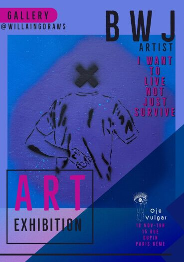
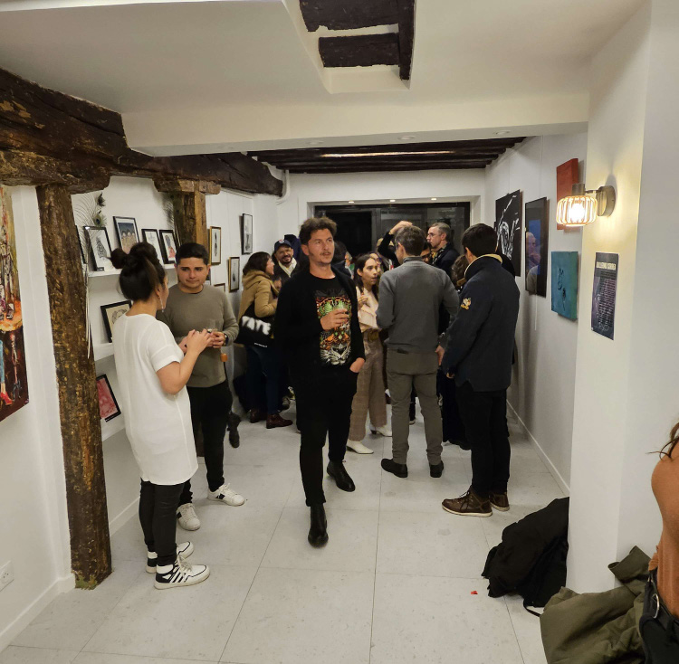
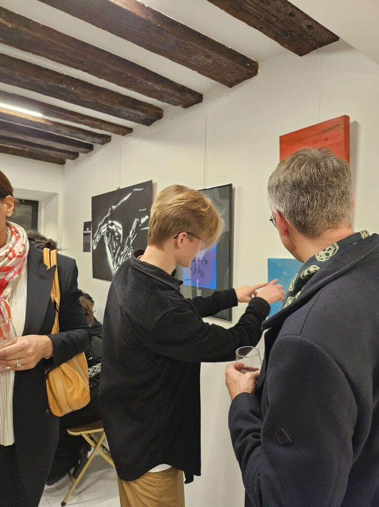
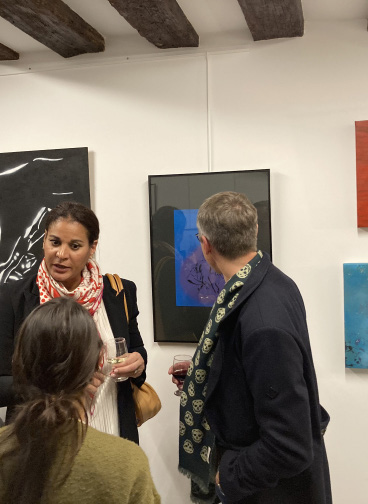

About
No formal training, no gallery pedigree. Just a reason to make something honest.

I'm BWJ. Autistic Dane, based in Copenhagen, though the work still carries a few years in Pau, in the south of France.
Drawing and creating had always come in periods, but in 2021 it became something more deliberate — a way of getting rid of anxiety and restlessness. Five years on, it's become expression.
The practice has grown past spray paint, acrylic, and paper — sculpture and other three-dimensional work have found their way in too. The subject hasn't changed as much: still the feelings of youth, still what music and the world put in my head, just handled with a steadier hand.
How It Came To Be
From a CAS project in the IB program to a running archive of exhibited, published, and sold work.
Practice Begins
Drawing and creating had always come in periods — in 2021, it became a deliberate, daily way of managing anxiety and restlessness. The "Life" collection begins here.
Filmantiq — Ojo Vulgar, Paris
Group exhibition at Ojo Vulgar gallery, 15 Rue Dupin, Paris 6ème, on 18th November 2023. "Ho9e" sold at the show.
Published in Ojo Vulgar
Work featured in two Ojo Vulgar print editions: "Horssérie BIZARRES" and "El Crimen Perfecto."
Galleri X
Continued exhibition work at Galleri X, running through September 2025 — the most recent chapter so far.
Expanding the Practice
Sculpture and other three-dimensional work have entered the practice alongside painting and paper.
Filmantiq — 18 Nov 2023
Ojo Vulgar Gallery, 15 Rue Dupin, Paris 6ème.



